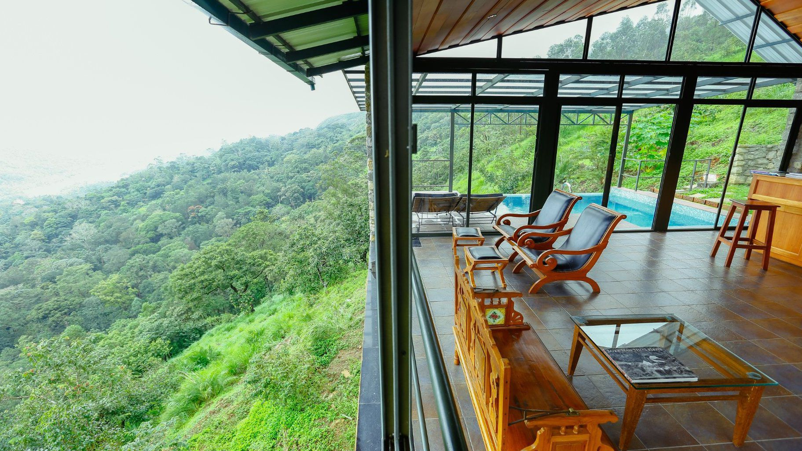
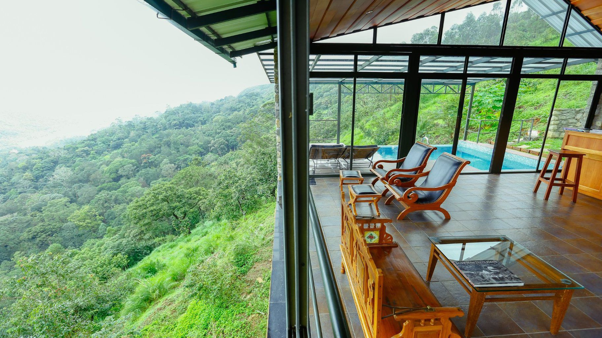

Munnar-South India's Tea Heaven
 

Munnar is one of the most beautiful hill station in Kerala. Snuggled at 6000 feet,
the town has an easy charm. The gradient and the salubrious weather of this hill are perfect
for tea farming. The hill station has about 80,000 miles of tea plantation. This is
undoubtedly one of the best places to visit in Kerala for Tea & Spice plantation tour. The
town has an old-world colonial feel to it.A hill station and former resort for the British Raj
elite, it's surrounded by rolling hills dotted with tea plantations established in the
late 19th century.
WAY TO MUNNAR:-
<--BACK
HOME